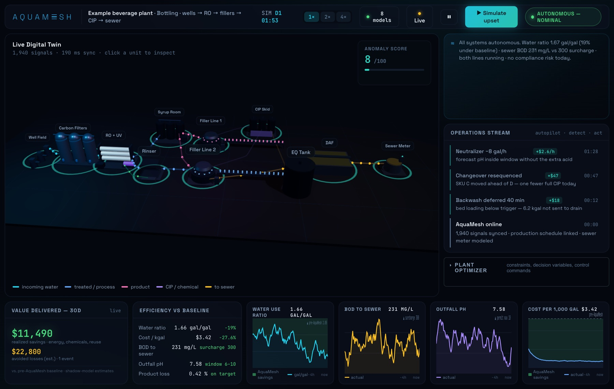
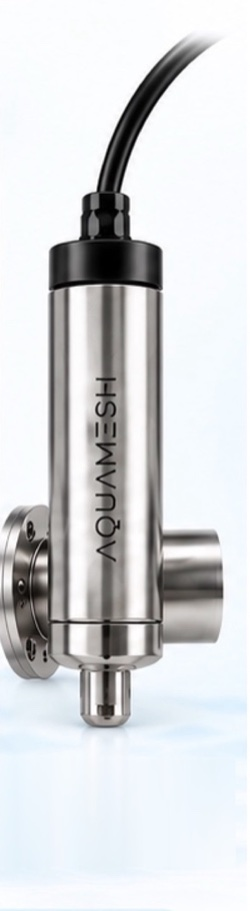

Food & Beverage
Find the money going down your drain.
AquaMesh is operational AI for plant water. It reads the data you already have, finds what you are losing in energy, water, product, chemicals and labor, prices every loss in dollars, and flags failing equipment before it stops a line. Your team approves every change.


- a year lost to unplanned downtime at a large consumer-goods plant
- $10M+3
- less downtime once maintenance runs on condition, not the calendar
- 35–45%4
- of what a plant processes can go down the drain as product
- 1–3%1
- a year in sewer charges from 1,000 mg/L of extra COD at 1 MGD
- $820K5
Published figures from other plants; sources at the foot of the page. What your plant loses comes from your own data.
Case studies
Food and beverage, worked through.
Case study Dairy processing
$1.17M a year in a dairy plant's own records.
A worked example on a modelled dairy plant: 19 losses priced line by line, from milk to drain at changeovers to rinses that run 40% too long.
- found a year
- $1.17M
- milk to drain
- 0.9% of intake
- findings, each with a fix
- 19
Case study Beverage bottling · live twin
A changeover slug, caught 48 minutes before the sewer meter.
A worked example in the live digital twin of a modelled bottling plant: detect, forecast the sewer bill, score four responses, approve the cheapest safe one.
- detection lead
- 48 min
- approved response
- $4,900
- estimated avoided
- $33.2k
Case study Corn wet milling · starch loss
One pound of starch per bushel is 160 tons a day.
An assessment of where starch escapes — separation, washing, CIP, dewatering — and how UV/Vis and NIR spectra catch it before it becomes wastewater load.
- bushels a day
- 320,000
- water a day
- 20.5M gal
- starch signal, NIR
- ↑2.8σ
In the press Dairy Foods · process losses
Why dairy plants still miss their most expensive process losses.
Where milk solids leave a plant unnoticed, why more historian tags cannot find them, and how to prove a saving one event at a time.
- of milk processed, lost to sewer
- 1–3%
- one UHT clean, minutes
- 142→66
Where the savings come from
5–15%+ target savings, across every line of the P&L.
Energy
Refrigeration, compressed air, pumps and heat recovery run to what the process needs, not to last summer's setpoint.
Water
Rinses end when the line is clean, and clean water gets reused. One plant cut a clean from 142 to 66 minutes.2
Product
Changeovers cut on what is in the pipe, not a timer. Yield stays in the bottle instead of the drain.
Chemicals
Caustic, acid and neutralizer dosed to the real load, not the worst day of the year.
Labor
Log sheets, cleaning records and compliance reports built from the data, not copied by hand.
Predictive maintenance
Predict failures before they stop a line.
- Membrane fouling. RO and UF lose flow slowly, then fast. We track flux and pressure drop and tell you when to clean: before throughput drops, not on a calendar.
- Pumps, blowers, compressors, heat exchangers. Wear and fouling flagged from data you already log, ranked by what a failure would cost.
- Cleaning on condition. CIP when the line needs it, not when the schedule says so.
Compliance and wastewater
Get ahead of compliance and the sewer bill.
- Surcharges on BOD, TSS, FOG and pH priced before the invoice, not after.
- Permit excursions forecast before the outfall meter logs them, with audit-ready records.
- AquaSpectra™ probe where meters are blind: sees product in the drain line, continuously, with no reagents.
How it works
From your data to money on the bill.
- 1
Connect
Read-only link to your historian, SCADA, lab and CIP records. No new hardware to start.
- 2
Find
Every loss traced to its cause and priced per year, with the tags that are the evidence.
- 3
Act
One clear action per loss, with an owner. Your team approves every change.
- 4
Verify
Savings count only when your own data shows them, against a baseline agreed up front.
The short answer
The fastest way to find product and water losses going down the drain.
Start with the historian data you already have. Line up effluent load against cleaning and changeover records, and the losses show up as load that continues after the line has finished its work. No new hardware is needed for that first look.
- 1
Export what you already log
Pull effluent flow, organic load, solids and turbidity from the historian, with the CIP and production records for the same period.
- 2
Line up load against events
Place changes in effluent load beside changeover and cleaning timestamps, so each rise is tied to what the line was doing at the time.
- 3
Look for the two common shapes
A cleaning cycle that keeps running after the return line has come clean, and a changeover flush cut wider than the transition needs.
- 4
Rank, then measure where you are blind
Rank the findings by what each is worth a year. Where existing instruments cannot see a stream, one or two probes confirm it. Your operators decide what to change.
How much is typically lost
Published dairy research puts routine losses at 1–3% of the milk a plant processes, mostly at startups, changeovers and rinses. What your plant loses depends on the product, the line and the cleaning regime. The free audit on your historian export gives you that figure, with the tags that are the evidence. Where you need a BOD number, it is calibrated to your own samples.
Start with a free audit.
Send a few months of plant data. Get every loss priced, with the fix, in a readout with your team. NDA first, read-only. Target payback under 12 months.
- Balannec et al., Desalination (2002): routine losses of about 1–3% of milk processed, in dairy plants.
- Alvarez, Daufin and Gésan-Guiziou, Journal of Dairy Science (2010): an industrial UHT clean, ended on measurement instead of a timer.
- Siemens, The True Cost of Downtime 2024: FMCG plants.
- US DOE / PNNL, Operations & Maintenance Best Practices, Release 3.0 (2010): industrial averages for predictive maintenance programs.
- City of San Diego rate of $0.27 per pound of COD (January 2026): about $2,252 a day. Worked through in our Water Online column.
- Turan, Ates and Inanc, Water Science & Technology 45(12) (2002): lab study on dairy effluent.
- US EPA (2010), discussed in our Water Online column.
Published figures from other plants. The 5–15%+ target applies to the water, energy and chemical spend AquaMesh can see. Payback is a target, not a guarantee; what any of this is worth at your site depends on your process, tariff and instrumentation.